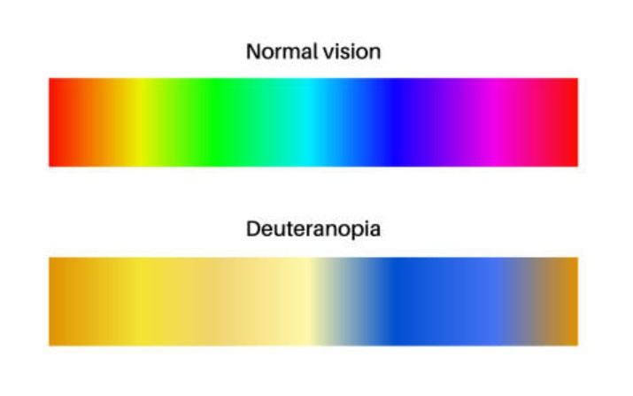
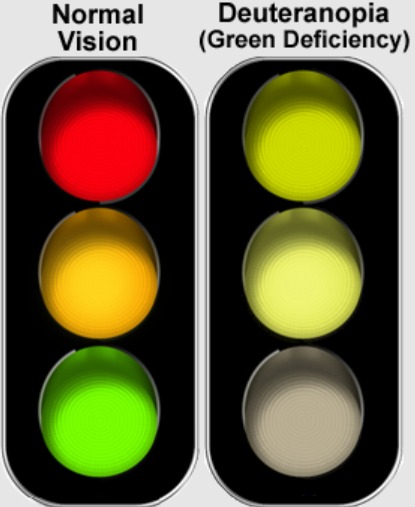

About Deuteranopia
It is a type of red-green color blindness where the green cone cells (M-cones) in the retina are absent or non-functional. This condition affects the ability to perceive green light, making it difficult to distinguish between green, red, yellow, and brown shades.
People with deuteranopia may see greens as beige or grey and often confuse them with reds or oranges. It is a form of dichromatic vision, meaning the person relies on only two types of cone cells instead of the normal three.
Deuteranopia is a genetic condition, typically inherited through the X chromosome, which makes it more common in males—affecting approximately 1% of men—and extremely rare in females. While it doesn't affect overall vision sharpness or cause physical discomfort, it can make certain tasks challenging, such as interpreting traffic lights, reading colored maps, or selecting clothes.
Though there's no cure, people with deuteranopia often adapt well through experience or assistive tools.

